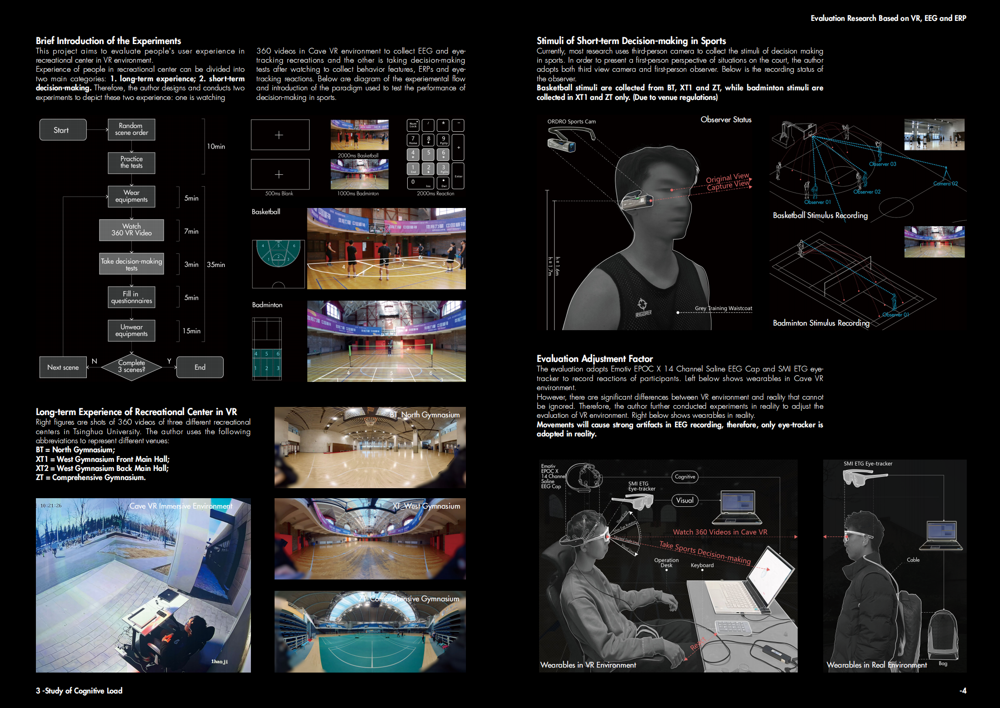
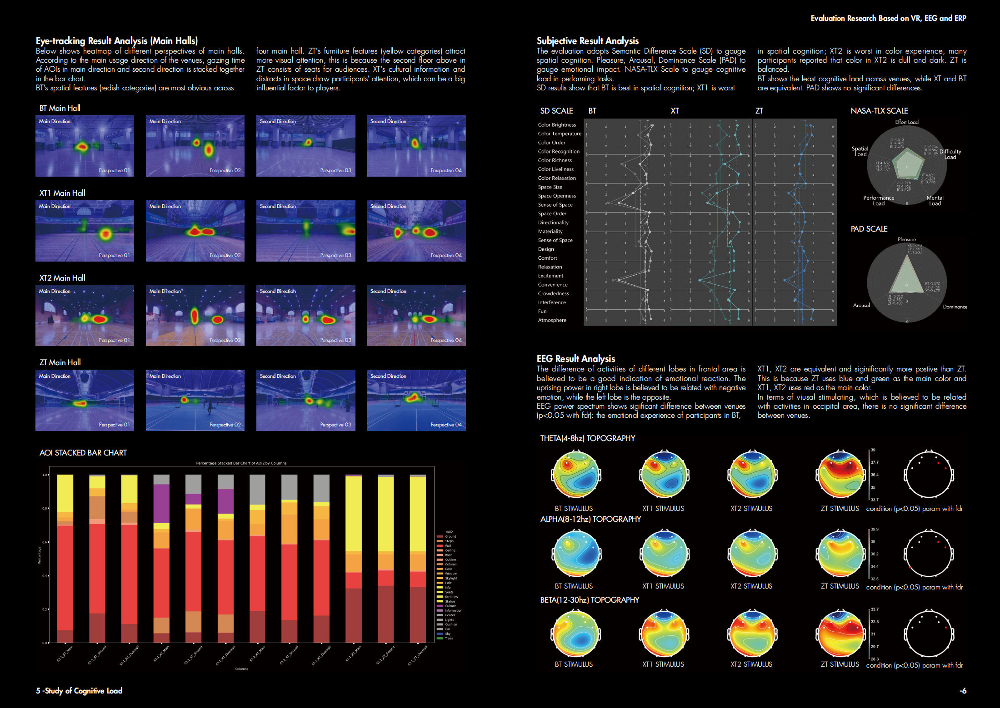
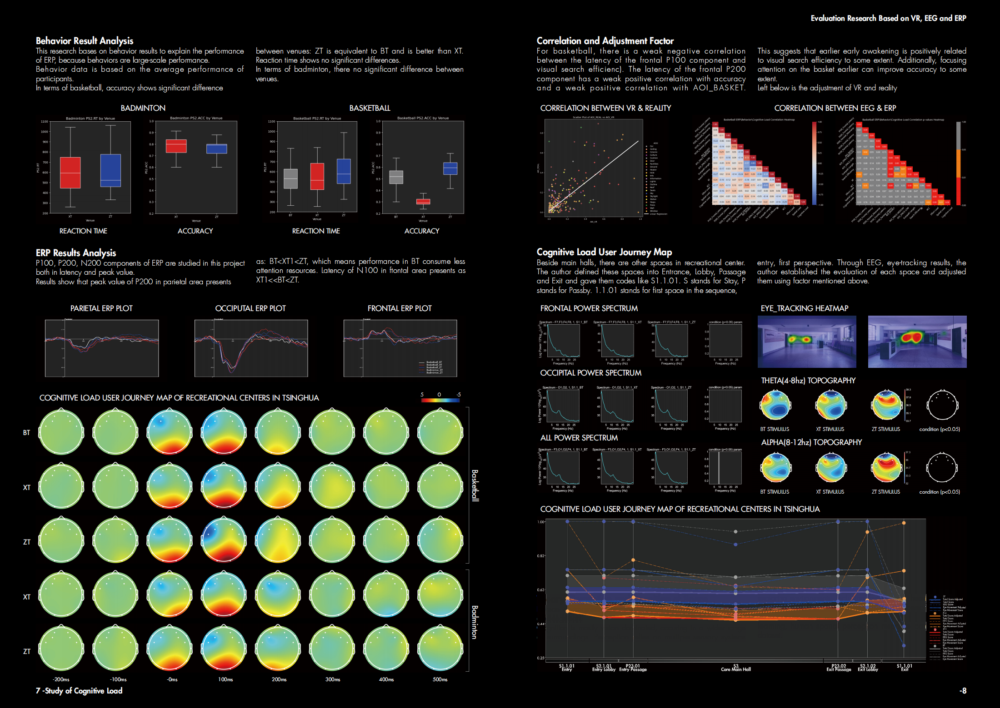
Study on the Spatial “Comfort and Fluency” of University Recreational Center Based on Cognitive Load (March Thesis)
-
The project originates from the evaluation of Tsinghua University's North Sports Complex. The observed issue is that the spatial quality of university sports complexes varies significantly, with the specific problem being the lack of an adequate evaluation system to assess the spatial discrepancies of these venues. On a scientific level, the key question is: What is the mechanism by which the environment affects the users' sports experience?
1. Research System Construction
The research is based on the "cognitive load" model to construct an evaluation index system, which mainly includes three aspects: subjective parameters, physiological parameters, and behavioral parameters. Specifically, the choice of EEG and eye-tracking is due to the importance of visual perception in architectural spaces, making eye-tracking essential. Furthermore, movement behavior includes spatial experience and sports decision-making. While measures like galvanic skin response (GSR) and heart rate can capture emotions, stress, and arousal, they are unable to depict higher-level functions such as decision-making. EEG, on the other hand, is well-suited to simultaneously capture spatial cognition and decision-making processes.
2. Experimental Design
Since the stimuli experienced by individuals in sports venues can be classified into two types—long-term spatial environmental stimuli and short-term decision-making stimuli—the experiment is designed in a way that follows the sequence of long-term spatial stimuli followed by short-term decision-making stimuli. Additionally, to control environmental variables, the three sports venues to be evaluated are digitally twin in a VR environment, and parameters are calibrated based on the performance of 10 participants in the real space.
3. Conclusions
Based on the comprehensive evaluation after bias correction, it is found that the overall cognitive load "comfort" in the West Gymnasium is lower than that of the Comprehensive Gym and the North Gym. The cognitive load "comfort" in the North Gymnasium is relatively uniform across different spatial scenes. However, when leaving the main entrance, the lack of a good view at the exit causes a noticeable decrease in the "comfort." The Comprehensive Gymnasium's overall score is lower than that of the North Gym, and the journey map shows similarities with the North Gym's overall experience, with both venues showing a decline in "comfort" at the venue exit. The West Gym has the lowest overall cognitive load "comfort." Improvements are needed at all spatial nodes. However, the entrance and exit experience is notably better compared to other spatial nodes. This is primarily because the West Gym is located in an environment with relatively good greenery, which contributes to a better entrance and exit experience.
-
Keywords: Quantitative UX Research, Cognitive Load, Sports Decision-making, EEG, ERP, Eye-tracking, VR
Project Type：March Thesis, School of Architecture, Tsinghua University
Time: 2024.2-2024.5
Instructor：Professor Zhuang Weimin, Senior Engineer Ren Fei
Collaborator: Individual Work
Main Contributions:
1. Based on the cognitive load model, simplified the PAD, SD, and NASA-TLX scales, and collected and analyzed 306 questionnaires over a period of 3 months, providing 50% support for the evaluation.
2. Organized a user test with 42 participants in a Cave VR environment within 3 days, using eye-tracking, EEG, event-related potentials (ERP), and E-Prime to analyze user behavior, quantify cognitive load, and create user experience journey maps for spatial design.
3. Used Python and MATLAB to process and analyze user behavior and physiological data, independently created and submitted a 212-page report and a 61-page presentation.
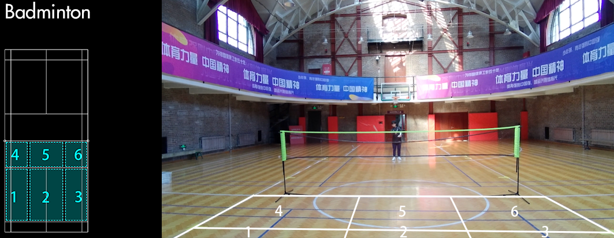
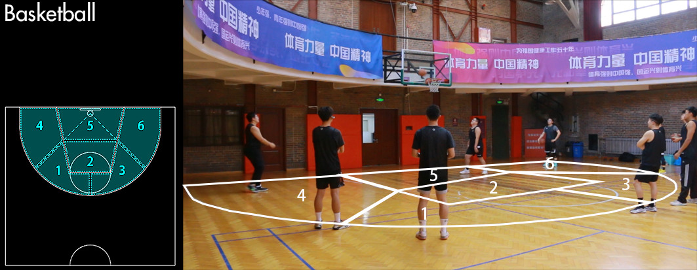
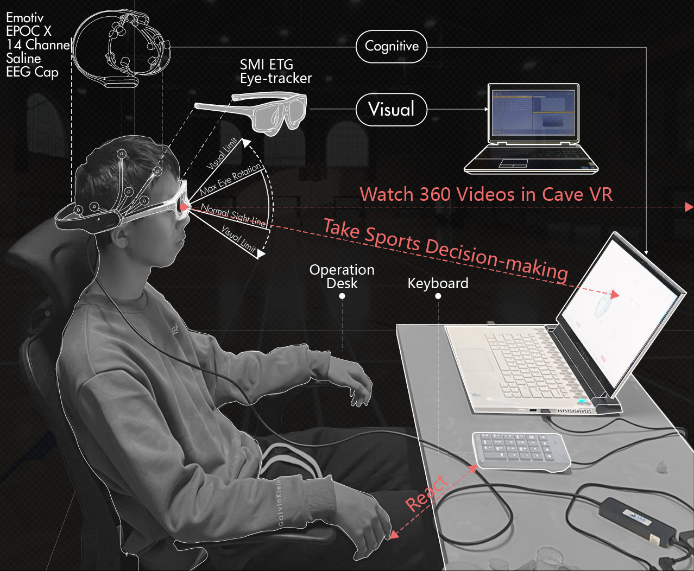
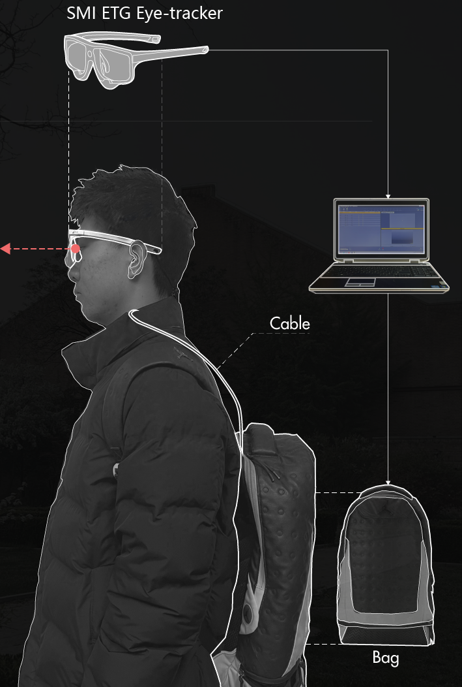

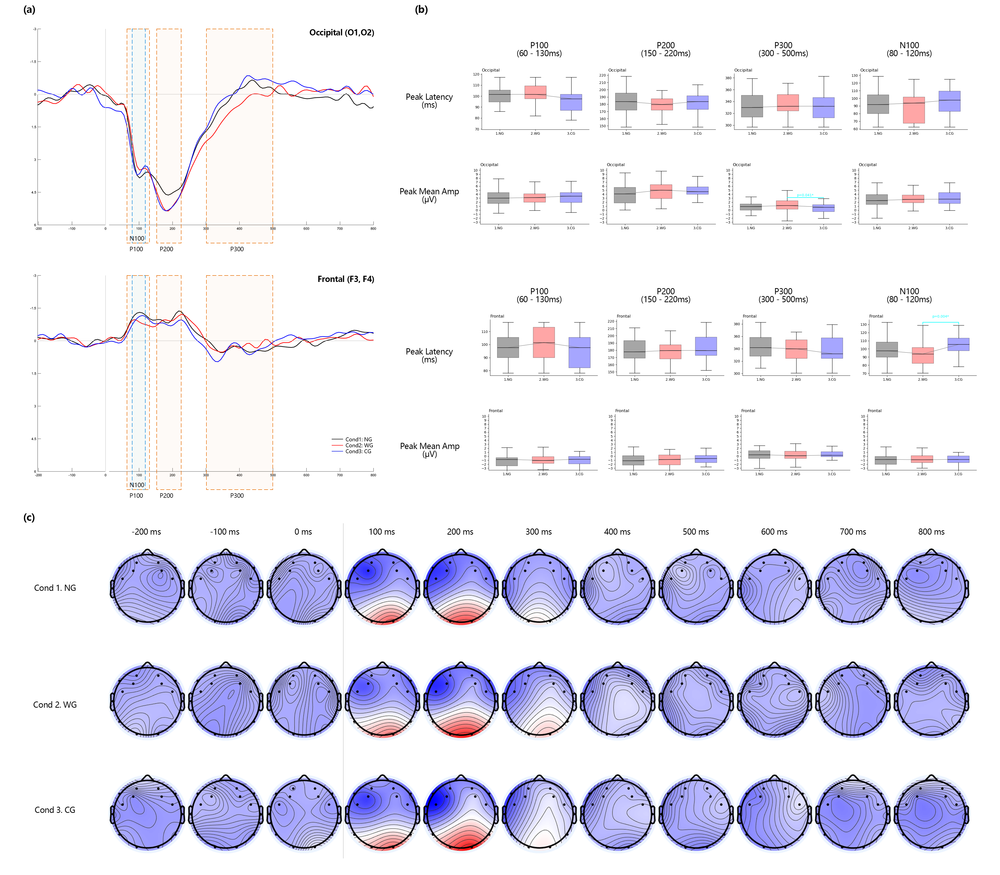
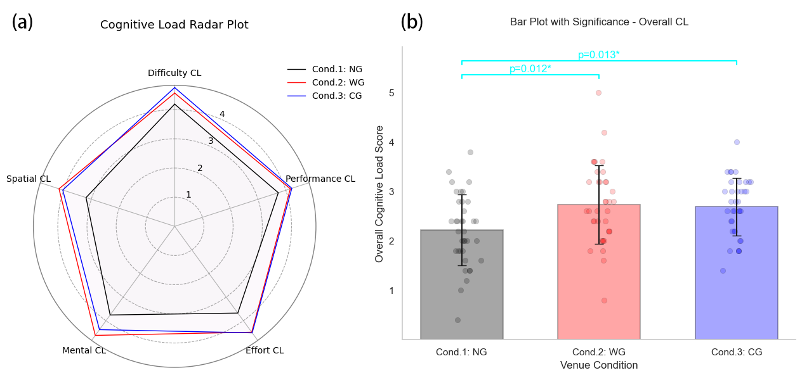
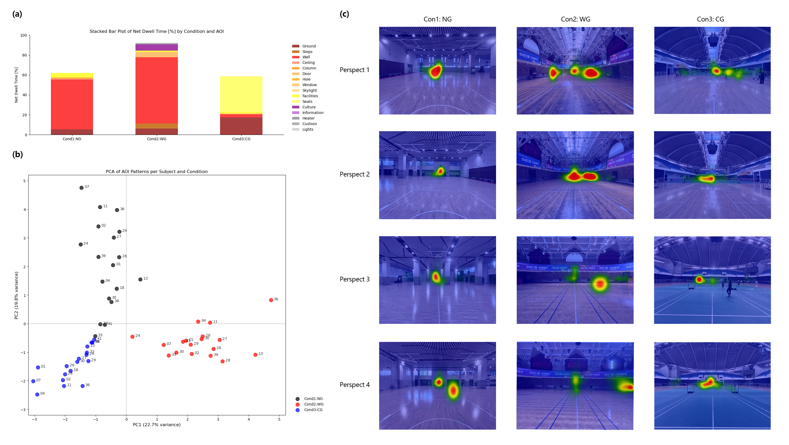
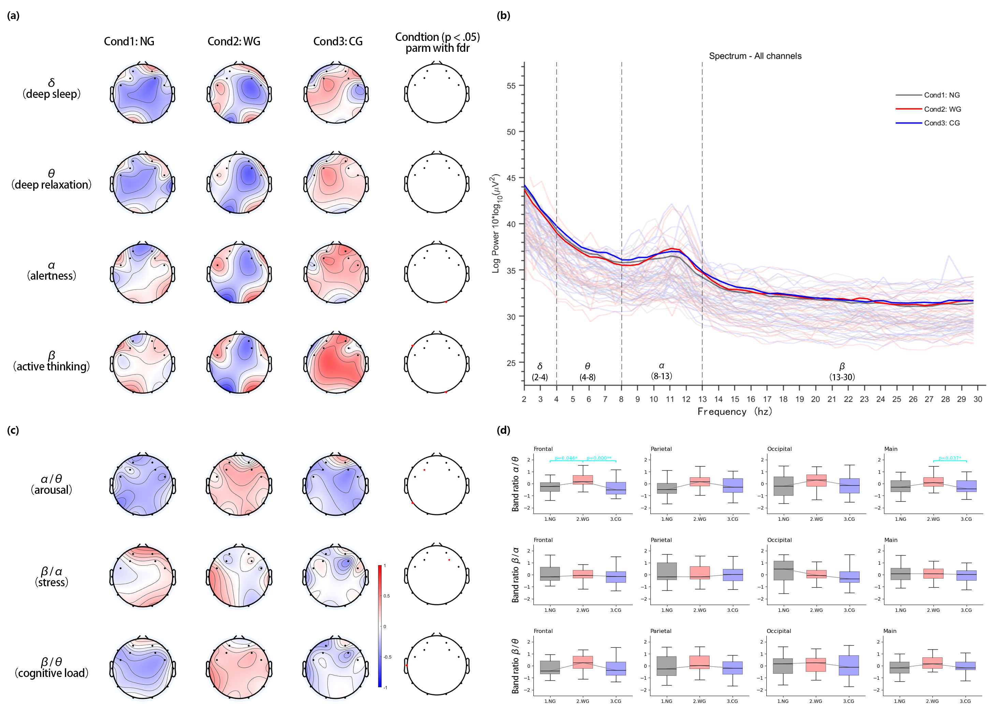
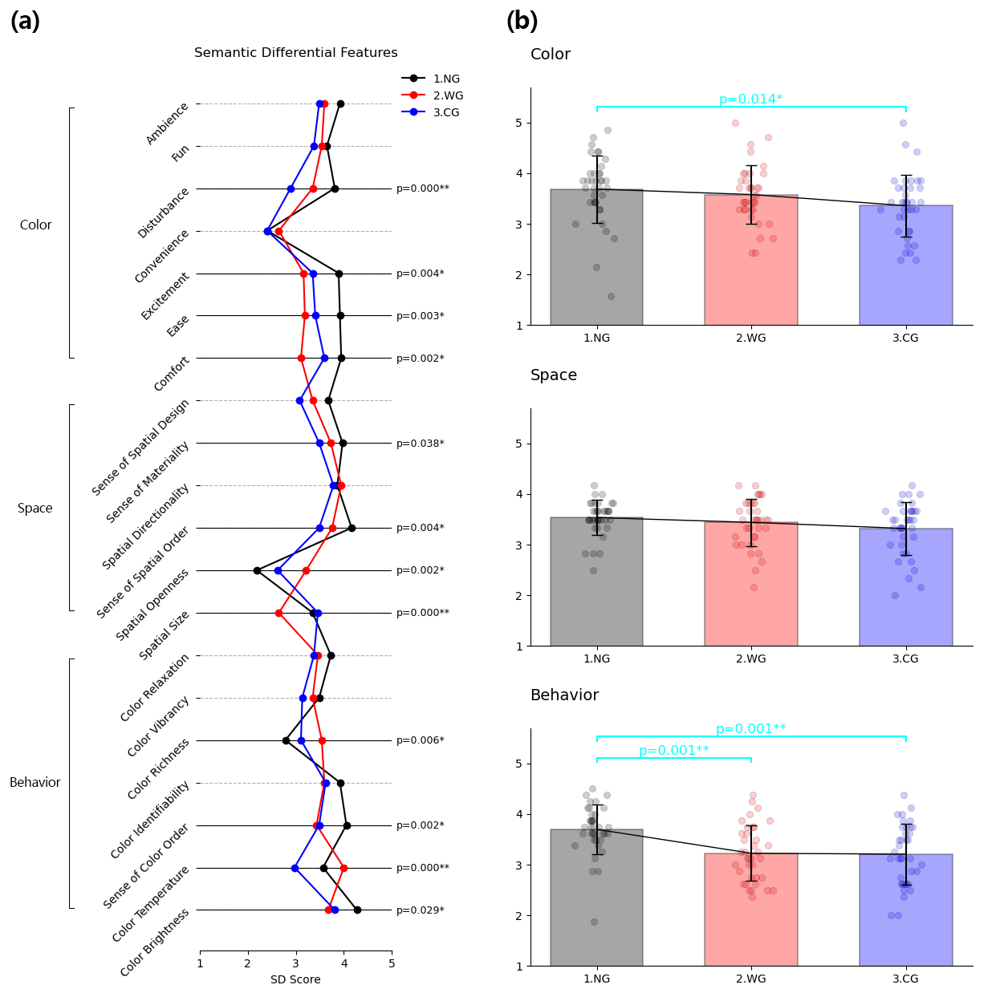
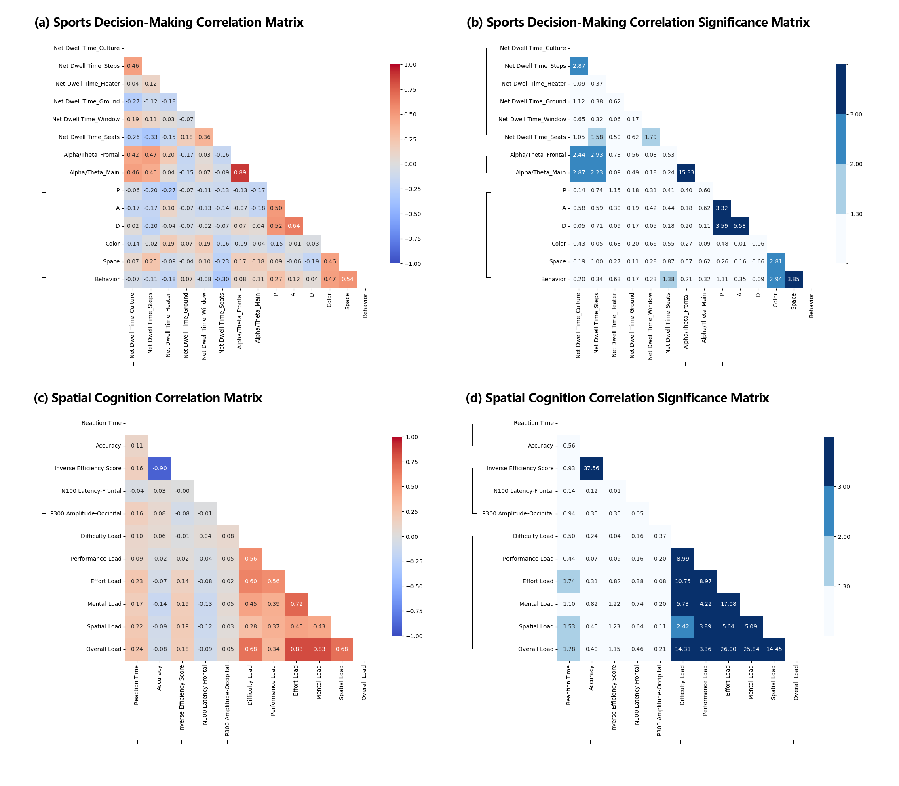
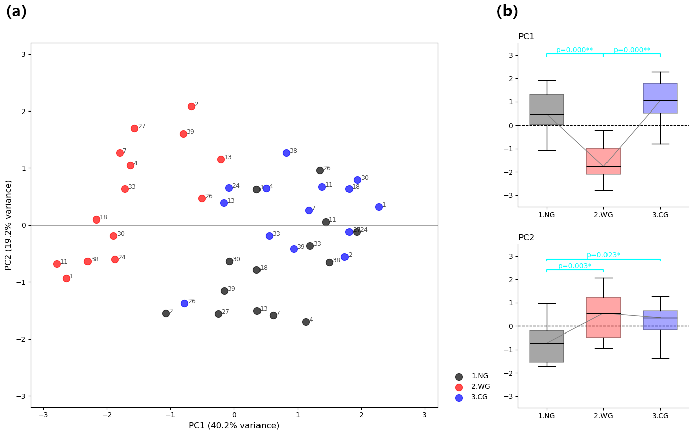